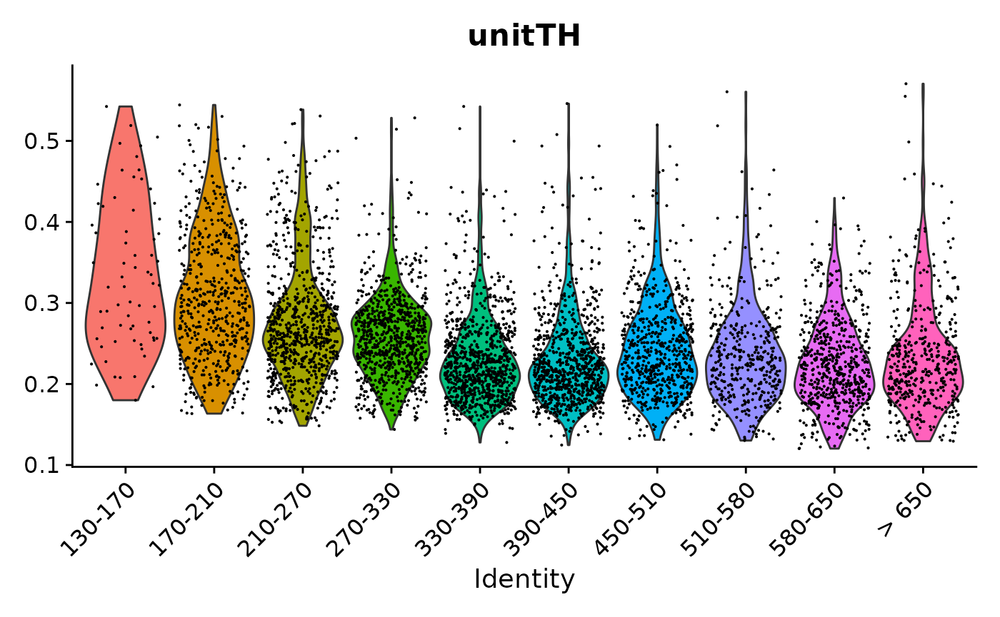
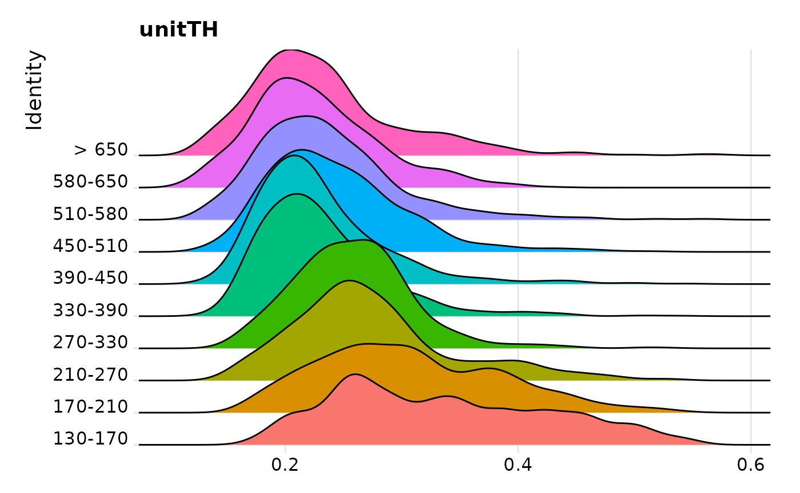
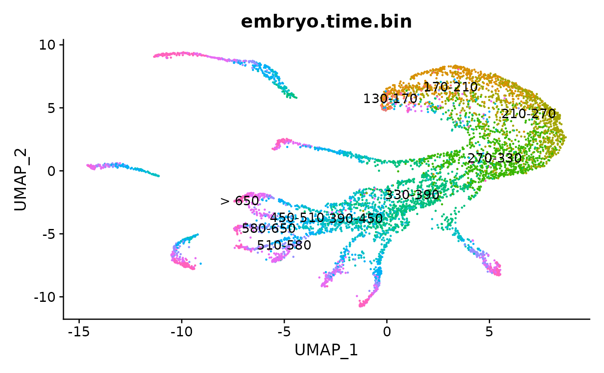
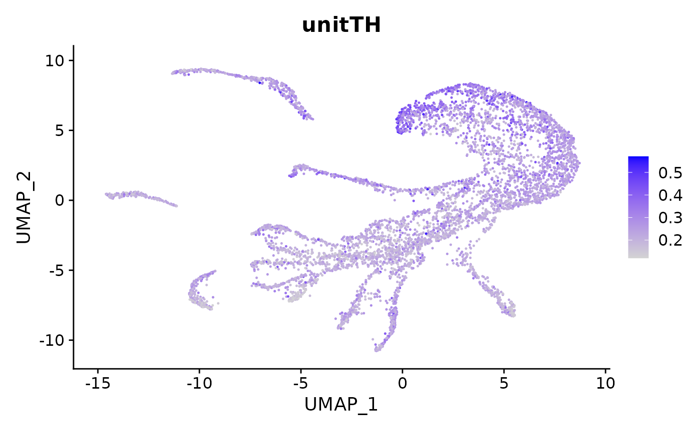
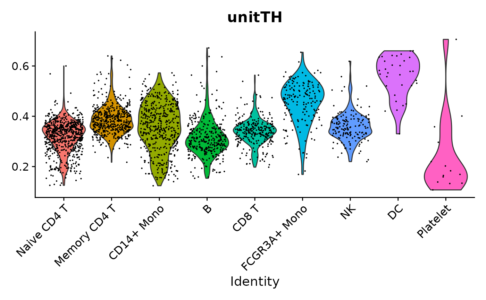
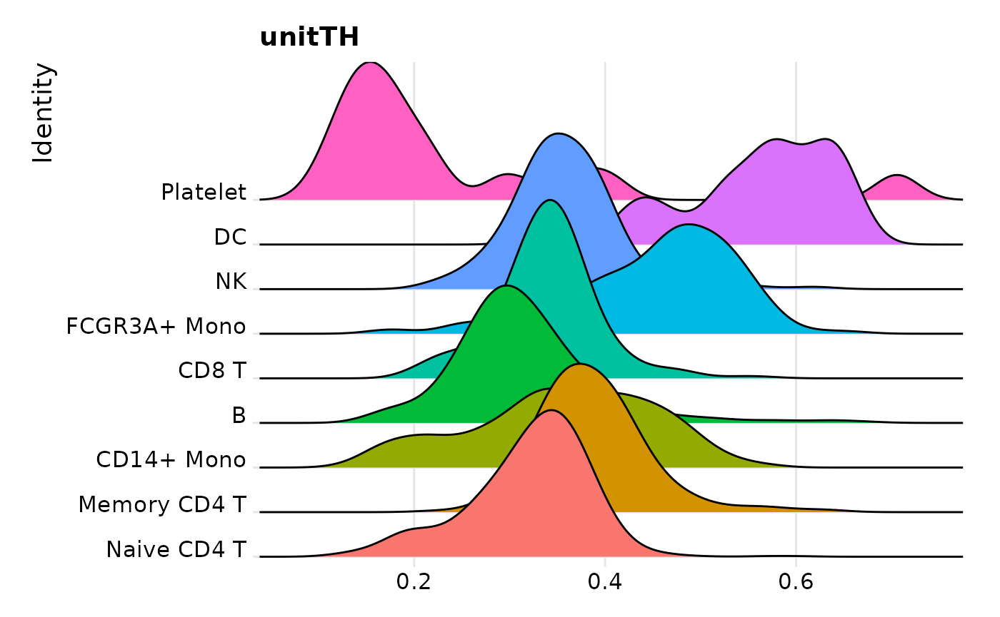
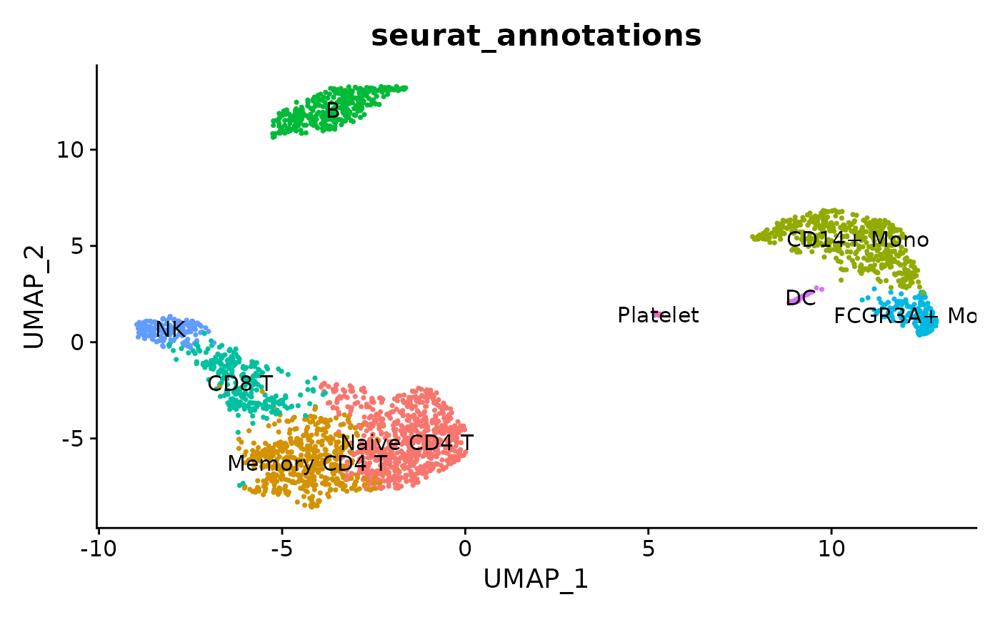
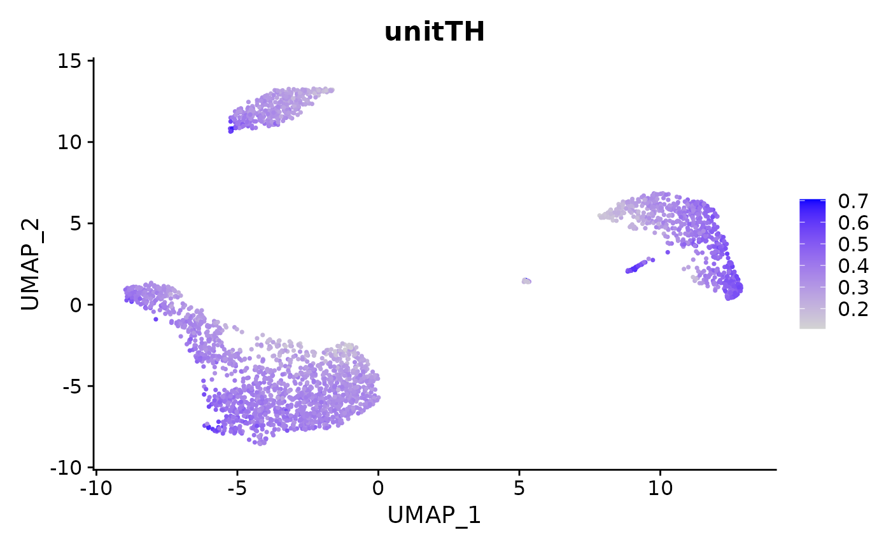

QuickStart.Rmd
library(quothic)
library(Seurat)
#> Attaching SeuratObject
#> Seurat v4 was just loaded with SeuratObject v5; disabling v5 assays and
#> validation routines, and ensuring assays work in strict v3/v4
#> compatibility mode
library(SeuratData)
#> ── Installed datasets ──────────────────────────────── SeuratData v0.2.2.9001 ──
#> ✔ celegans.embryo 0.1.0 ✔ stxBrain 0.1.1
#> ✔ pbmc3k 3.1.4
#> ────────────────────────────────────── Key ─────────────────────────────────────
#> ✔ Dataset loaded successfully
#> ❯ Dataset built with a newer version of Seurat than installed
#> ❓ Unknown version of Seurat installed
#SeuratData::InstallData("celegans.embryo")
obj <- LoadData("celegans.embryo", type="default")
#> Validating object structure
#> Updating object slots
#> Ensuring keys are in the proper structure
#> Ensuring keys are in the proper structure
#> Ensuring feature names don't have underscores or pipes
#> Updating slots in RNA
#> Validating object structure for Assay 'RNA'
#> Object representation is consistent with the most current Seurat version
obj[["percent.mt"]] <- PercentageFeatureSet(obj, pattern = "^MT-")
obj <- subset(obj, subset = nFeature_RNA > 200 & nFeature_RNA < 2500 & percent.mt < 5)
obj <- NormalizeData(obj)
obj <- FindVariableFeatures(obj, selection.method = "vst", nfeatures = 2000)
all.genes <- rownames(obj)
obj <- ScaleData(obj, features = all.genes)
#> Centering and scaling data matrix
obj <- RunPCA(obj, features = VariableFeatures(object = obj))
#> PC_ 1
#> Positive: WBGene00016463, WBGene00011500, WBGene00007883, WBGene00249817, WBGene00004346, WBGene00022144, WBGene00012853, WBGene00008453, WBGene00003851, WBGene00004207
#> WBGene00011545, WBGene00008288, WBGene00001189, WBGene00010236, WBGene00017671, WBGene00010239, WBGene00219372, WBGene00019324, WBGene00011289, WBGene00021395
#> WBGene00022419, WBGene00001122, WBGene00020710, WBGene00009716, WBGene00003642, WBGene00005655, WBGene00044144, WBGene00010864, WBGene00016321, WBGene00000277
#> Negative: WBGene00009212, WBGene00015610, WBGene00002253, WBGene00013553, WBGene00018606, WBGene00001854, WBGene00000217, WBGene00044066, WBGene00022111, WBGene00016088
#> WBGene00011156, WBGene00022112, WBGene00016071, WBGene00235158, WBGene00012021, WBGene00012899, WBGene00020537, WBGene00020205, WBGene00008447, WBGene00000405
#> WBGene00009385, WBGene00000411, WBGene00003159, WBGene00269431, WBGene00002085, WBGene00012900, WBGene00000868, WBGene00021299, WBGene00003902, WBGene00008510
#> PC_ 2
#> Positive: WBGene00020582, WBGene00011763, WBGene00016711, WBGene00006055, WBGene00016254, WBGene00016289, WBGene00021915, WBGene00001548, WBGene00001543, WBGene00001535
#> WBGene00017076, WBGene00044568, WBGene00018136, WBGene00000895, WBGene00020190, WBGene00164973, WBGene00003591, WBGene00044068, WBGene00009152, WBGene00011534
#> WBGene00015214, WBGene00045056, WBGene00016328, WBGene00007490, WBGene00009153, WBGene00000233, WBGene00011433, WBGene00002141, WBGene00007542, WBGene00009375
#> Negative: WBGene00010559, WBGene00015354, WBGene00008840, WBGene00007604, WBGene00019269, WBGene00017150, WBGene00005585, WBGene00010575, WBGene00005387, WBGene00001992
#> WBGene00010632, WBGene00015411, WBGene00004926, WBGene00017236, WBGene00010144, WBGene00005399, WBGene00011644, WBGene00009842, WBGene00022391, WBGene00005338
#> WBGene00016561, WBGene00008184, WBGene00019980, WBGene00077698, WBGene00005542, WBGene00009136, WBGene00019975, WBGene00007247, WBGene00018081, WBGene00044922
#> PC_ 3
#> Positive: WBGene00044068, WBGene00007641, WBGene00019482, WBGene00007490, WBGene00219310, WBGene00018352, WBGene00011328, WBGene00007286, WBGene00001123, WBGene00017243
#> WBGene00194982, WBGene00004213, WBGene00001210, WBGene00001824, WBGene00009144, WBGene00016005, WBGene00017326, WBGene00021915, WBGene00008144, WBGene00008865
#> WBGene00022696, WBGene00001954, WBGene00000950, WBGene00015580, WBGene00022419, WBGene00017295, WBGene00020196, WBGene00000220, WBGene00021396, WBGene00001951
#> Negative: WBGene00003591, WBGene00020582, WBGene00017076, WBGene00001548, WBGene00018136, WBGene00164973, WBGene00011534, WBGene00001543, WBGene00044568, WBGene00015214
#> WBGene00007542, WBGene00009375, WBGene00006055, WBGene00045056, WBGene00011545, WBGene00001535, WBGene00003752, WBGene00021116, WBGene00020136, WBGene00004924
#> WBGene00020759, WBGene00006981, WBGene00019293, WBGene00011137, WBGene00000277, WBGene00000233, WBGene00018298, WBGene00002097, WBGene00017597, WBGene00012853
#> PC_ 4
#> Positive: WBGene00012616, WBGene00013748, WBGene00004346, WBGene00017129, WBGene00044387, WBGene00044419, WBGene00044562, WBGene00044144, WBGene00022295, WBGene00044238
#> WBGene00001988, WBGene00001681, WBGene00012064, WBGene00009810, WBGene00011500, WBGene00219421, WBGene00194689, WBGene00010647, WBGene00011289, WBGene00005560
#> WBGene00007883, WBGene00012016, WBGene00004091, WBGene00044553, WBGene00010864, WBGene00001676, WBGene00022842, WBGene00010239, WBGene00005975, WBGene00008288
#> Negative: WBGene00001548, WBGene00001543, WBGene00044568, WBGene00001535, WBGene00017076, WBGene00164973, WBGene00011534, WBGene00018136, WBGene00009152, WBGene00015214
#> WBGene00000895, WBGene00020582, WBGene00007542, WBGene00011838, WBGene00006652, WBGene00007314, WBGene00045056, WBGene00009153, WBGene00000233, WBGene00003745
#> WBGene00010285, WBGene00019293, WBGene00002097, WBGene00007543, WBGene00003722, WBGene00021089, WBGene00012586, WBGene00013891, WBGene00004926, WBGene00010632
#> PC_ 5
#> Positive: WBGene00007816, WBGene00013850, WBGene00011453, WBGene00015729, WBGene00020151, WBGene00007487, WBGene00016514, WBGene00011433, WBGene00000457, WBGene00003759
#> WBGene00002105, WBGene00195143, WBGene00003743, WBGene00023414, WBGene00008589, WBGene00003752, WBGene00010575, WBGene00018879, WBGene00001542, WBGene00013166
#> WBGene00010316, WBGene00008651, WBGene00000483, WBGene00011888, WBGene00010971, WBGene00044582, WBGene00020759, WBGene00017858, WBGene00001456, WBGene00001459
#> Negative: WBGene00001548, WBGene00001543, WBGene00017076, WBGene00001535, WBGene00009152, WBGene00044568, WBGene00011534, WBGene00018136, WBGene00164973, WBGene00016114
#> WBGene00219421, WBGene00004207, WBGene00009901, WBGene00011838, WBGene00007314, WBGene00000233, WBGene00020581, WBGene00003890, WBGene00012616, WBGene00000895
#> WBGene00003722, WBGene00009153, WBGene00044419, WBGene00007542, WBGene00017129, WBGene00014101, WBGene00006669, WBGene00007058, WBGene00015214, WBGene00003614
obj = RunUMAP(object = obj, dims = 1:10)
#> Warning: The default method for RunUMAP has changed from calling Python UMAP via reticulate to the R-native UWOT using the cosine metric
#> To use Python UMAP via reticulate, set umap.method to 'umap-learn' and metric to 'correlation'
#> This message will be shown once per session
#> 22:56:31 UMAP embedding parameters a = 0.9922 b = 1.112
#> 22:56:31 Read 6165 rows and found 10 numeric columns
#> 22:56:31 Using Annoy for neighbor search, n_neighbors = 30
#> 22:56:31 Building Annoy index with metric = cosine, n_trees = 50
#> 0% 10 20 30 40 50 60 70 80 90 100%
#> [----|----|----|----|----|----|----|----|----|----|
#> **************************************************|
#> 22:56:32 Writing NN index file to temp file /tmp/RtmpQ0lVwX/file2a0154b636420
#> 22:56:32 Searching Annoy index using 1 thread, search_k = 3000
#> 22:56:33 Annoy recall = 100%
#> 22:56:34 Commencing smooth kNN distance calibration using 1 thread with target n_neighbors = 30
#> 22:56:34 Initializing from normalized Laplacian + noise (using irlba)
#> 22:56:35 Commencing optimization for 500 epochs, with 240468 positive edges
#> 22:56:50 Optimization finished
# Example usage
#entropy <- shannon_entropy(obj, method="predefined")
entropy <- shannon_entropy(obj, method="RCSA")
#> Performing log2 transformation due to high skewness
#> Calculating reference entropy...
#>
1: Stablility = 0.000006
#> Calculating reference entropy...
#>
2: Stablility = 0.000000
obj = AddMetaData(obj, entropy, col.name = "unitTH")
VlnPlot(obj, features = "unitTH", group.by = "embryo.time.bin") + NoLegend()
RidgePlot(obj, features = "unitTH", group.by = "embryo.time.bin") + NoLegend()
#> Picking joint bandwidth of 0.0154

FeaturePlot(obj, features = "unitTH")
#SeuratData::InstallData("pbmc3k")
pbmc3k.final <- LoadData("pbmc3k", type = "pbmc3k.final")
#> Validating object structure
#> Updating object slots
#> Ensuring keys are in the proper structure
#> Updating matrix keys for DimReduc 'pca'
#> Updating matrix keys for DimReduc 'umap'
#> Warning: Graph RNA_nn changing from Graph to Graph
#> Warning: Graph RNA_snn changing from Graph to Graph
#> Warning: DimReduc pca changing from DimReduc to DimReduc
#> Warning: DimReduc umap changing from DimReduc to DimReduc
#> Ensuring keys are in the proper structure
#> Ensuring feature names don't have underscores or pipes
#> Updating slots in RNA
#> Updating slots in RNA_nn
#> Setting default assay of RNA_nn to RNA
#> Updating slots in RNA_snn
#> Setting default assay of RNA_snn to RNA
#> Updating slots in pca
#> Updating slots in umap
#> Setting umap DimReduc to global
#> Setting assay used for NormalizeData.RNA to RNA
#> Setting assay used for FindVariableFeatures.RNA to RNA
#> Setting assay used for ScaleData.RNA to RNA
#> Setting assay used for RunPCA.RNA to RNA
#> Setting assay used for JackStraw.RNA.pca to RNA
#> No assay information could be found for ScoreJackStraw
#> Warning: Adding a command log without an assay associated with it
#> Setting assay used for FindNeighbors.RNA.pca to RNA
#> No assay information could be found for FindClusters
#> Warning: Adding a command log without an assay associated with it
#> Setting assay used for RunUMAP.RNA.pca to RNA
#> Validating object structure for Assay 'RNA'
#> Validating object structure for Graph 'RNA_nn'
#> Validating object structure for Graph 'RNA_snn'
#> Validating object structure for DimReduc 'pca'
#> Validating object structure for DimReduc 'umap'
#> Object representation is consistent with the most current Seurat version
# Example usage
#entropy <- shannon_entropy(pbmc3k.final, method="predefined")
entropy <- shannon_entropy(pbmc3k.final, method="RCSA")
#> Performing log2 transformation due to high skewness
#> Calculating reference entropy...
#>
1: Stablility = 0.000024
#> Calculating reference entropy...
#>
2: Stablility = 0.000001
pbmc3k.final = AddMetaData(pbmc3k.final, entropy, col.name = "unitTH")
#summary(pbmc_small@meta.data)
#colnames(pbmc3k.final@meta.data)
VlnPlot(pbmc3k.final, features = "unitTH", group.by = "seurat_annotations") + NoLegend()
RidgePlot(pbmc3k.final, features = "unitTH", group.by = "seurat_annotations") + NoLegend()
#> Picking joint bandwidth of 0.023

FeaturePlot(pbmc3k.final, features = "unitTH")